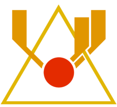

Upsilon
In April 2103, Upsilon was evacuated and its staff transferred to Theta, except for Carl Semken and his colleague, Amy Azzaro. Azzarro and Semken were assigned the task of automatizing the Upsilon in a way to maintain it's thermal plant and secure power production for the entire PATHOS-II complex, while also sealing blocks to prevent helper robots with brain scans implanted by the WAU from breaking anything.
On May 04, 2103, Semken was attacked and killed by a Universal Helper bot, while Azzarro managed to escape and even stop the robot from proceeding by electrifying it with a power cable. Later, while attempting to restore power to a shuttle train, Azzarro was involved in an accident and, before dying, was connected to the WAU and kept alive artificially.
In December 2103, as described in Transmission #8, Imogen Reed travels to Upsilon in order to shut down the entire station in an attempt to kill the WAU, but this plan fails due to WAU regaining power autonomously from Alpha.
In a computer log dated May 9, 2104, the following lines of code can be found: "UPSILON#61633 initiates scan of subject Simon Jarrett (Aut_DavidMunshi2015v1). Command or program ApPS is unavailable; 4416cWAUcf77 is complete". This code could reference the moment the AI created from a 2015 brain scan of Simon Jarrett is successfully copied into a Cortex Chip, which is then implanted in the body of Imogen Reed on a Pilot Seat at Upsilon.
Lambda
At some point after the Impact Event, Lambda's crew was relocated to Theta. After that, Adam Golaski and Imogen Reed, both coming from Theta, went to Lambda as a salvage crew.
During their search for salvage, they discover an incapacitated UH-2 robot that introduces himself as Harry Halperin. Harry Halperin's implanted consciousness is the first known example of a Mockingbird created by the WAU. At first, the machine does not realize its current situation, believing that it is experiencing the ARK, but as it becomes frantic, the engineers deactivate the robot.
Later, Golaski and Reed are joined by another group from Theta, consisting of Vanessa Hart, Baxter Rogers, Richard Holland, Jessica Davis, Martin Fisher, and Dorian Cronstedt.
Davis is killed when structure gel pumps violently from a wall at high pressure, hitting her in the forehead like a bullet. She soon becomes reanimated, now bathed in structure gel, and showing signs of violent behavior towards Richard Holland. Holland ultimately incapacitates Davis after she attacks him. Suddenly, Adam Golaski, who has been secretly consuming structure gel, appears, now fully covered by the gel, and attacks Holland, killing him. Adam is restrained by the others and later abandoned and locked in a cargo bay.
By this point, structure gel was spreading through the site at an increasing rate, beginning with isolated small leaks, to the gel pouring from most of the station's walls until the point that site Lambda is on the verge of collapse because of the structure gel's pressure.
The group prepares to escape from Lambda under the command of Dorian Cronstedt. Vanessa Hart is assigned to bring the CURIE, but only manages to recover Haimatsu Ductile Suits for their escape on foot. While Hart is retrieving the suits, Reed is attacked by a partially mutated Adam Golaski but manages to kill him. Cronstedt is killed by the WAU. Martin Fisher's corpse is reanimated by structure gel and kills Baxter Rogers, but is stopped by Imogen Reed while he was attacking Vanessa Hart.
Reed moves to Upsilon's geothermal plant and shuts down the power, suffocating herself in the process. The WAU's battery reserves are initiated for 201 days. Vanessa is left as the sole survivor of the incidents in Lambda and walks back to Theta in a Haimatsu Ductile Suit, suffering only bruising and mild hypothermia.
In January 2103, a group of divers including Maggie Komorebi and Shawn Evans were sent to survey the area around Lambda. On January 15, they were recalled and sent by Peter Strasky to help Terry Akers relocate to Theta.
Delta
On August 14th, 2103, Delta's crew was reassigned to Theta, except for its Chief Factor, Terry Akers, who remained isolated in the facility by his own decision. At some point, he began ingesting large amounts of structure gel and underwent a brief period of reconstruction while plummeting into insanity. During a strong psychotic episode, Akers listened to a voice that said he didn't need his eyes to see and, due to the gel rendering him light-sensitive, he removed his own eyes.
On January 15th, 2104, a delusional and mutated Terry Akers called Theta claiming that he wanted to relocate as his crew did months previously. Theta Dispatcher Peter Strasky met this request with a welcomed surprise, and informed Akers of a crew of divers that were in the area. Strasky directed them to the Delta site, where they were ambushed by a mentally disturbed Terry Akers. He somehow managed to inject them with what is believed to be structure gel and escaped on the Zeppelin that they used to shuttle themselves at the site. Later, the team, among which were Maggie Komorebi and Shawn Evans, died of their injuries.
Theta
On April 2103, Upsilon was evacuated and its staff transferred to Theta, except for Carl Semken and Amy Azzaro who stayed behind to automate power production.
On June 21, 2103, Catherine Chun decided to build an AR capsule containing the brain scans of all PATHOS-II staff. On July 3, the ARK project officially began. During the next two months, Catherine scanned the majority of Theta staff.
Mark Sarang developed a theory he dubbed the continuity. After his scan on July 12, Sarang committed suicide in the pilot seat. The ARK project was temporarily put on hold, but continued on July 29. Inspired by Sarang's theory, a number of Theta staff committed suicide following their scans. Finally, on September 2, after Guy Konrad's death, John Strohmeier put the project on hold indefinitely.
On August 14, 2103, Delta's crew was reassigned to Theta, except for its Chief Factor, Terry Akers, who remained isolated in the facility by his own decision.
At some point after the Impact Event, Lambda's crew was relocated to Theta.
On December 25, 2103, a party formed by Catherine Chun, Sarah Lindwall, Nicolai Ivashkin, Ian Pedersen and Jasper Hill left Theta, heading towards Omicron in order to complete the ARK project by launching it into space using the Omega Space Gun.
Between July 31st and December 18th of 2103, as described in Transmissions, a salvage crew consisting of Imogen Reed and Adam Golaski were sent to Lambda. They were later joined by Vanessa Hart, Dorian Cronstedt, Baxter Rogers, Martin Fisher, Jessica Davis and Richard Holland. On December 20, 2103, Vanessa Hart was the only survivor to return from Lambda.
On January 11, 2104, a huge Structure Gel leak caused the WAU to seize control over the station's DUNBAT. Quarantine procedures were enforced to avoid further development.
On January 15, 2104, Terry Akers called Theta claiming that he wants to relocate as his crew had done months prior. Peter Strasky sent a group of divers including Maggie Komorebi to accompany him to Theta. Akers was later found outside Theta on the commandeered Zeppelin in a comatose state. He was brought into the site and placed in the medical ward. Upon examination and after conducting several scans, the on-site doctor Nadine Masters believed it was unlikely he would awaken due to the severe mutations and infections the gel had caused within his body. Sometime later, Masters was attacked in her office by Akers while she was writing a report. She was not killed, so it is assumed Akers injected her with structure gel
The details of the events that followed are unclear, but what is known is that Akers was joined by three other Proxies, either infected by Akers or created by the WAU to mimic him. Together, they stalk the decks of Theta, driving the remaining human occupants to Theta's maintenance floor.
It is assumed that employees Aashish Shankar and Jane Adams had already been taken by the proxies. Initially, Brandon Wan stayed behind to ensure his group's escape from Theta by disconnecting the elevator's connector chip from the safety latch, sealing the lift, and preventing the Proxies' advance; cornered by the creatures, he then resorted to committing suicide. Alice Koster was soon dominated by a Proxy in the shuttle station. Vanessa Hart, Vigdis Jonsdottir, Peter Strasky, Richard Thabo and Emma Alvaro managed to escape, making their way towards Omicron using the station's sewers.
Omicron
On September 13, 2103, Vic Auclair ordered an evacuation of the staff from Tau to Omicron. Julia Dahl descends into the Omega Sector to assist in the evacuation, but leaves when she hears the evacuees being attacked by marine wildlife. Dahl reports the evacuation as a complete failure, hoping that it will discourage another attempt. Claudia Eames orders the Climber to stay at the plateau.
Sometime later, Johan Ross, who was presumably stationed at Omicron at the time, made it back to Tau to continue his work at Alpha.
On December 25, 2103, a party formed by Catherine Chun, Sarah Lindwall, Nicolai Ivashkin, Ian Pedersen, and Jasper Hill arrive in Omicron with the ARK. Catherine scans Omicron's personnel before taking the Climber down to the Omega Sector.
On December 27, 2103, Johan Ross was found dead in the climber by Omicron staff. Ross was taken back to Omicron and later found to be brain-dead. Ross was kept in a glass containment room. The staff observed anomalous phenomena around him, such as system failure and interference in blackboxes. Unbeknownst to the staff, this was due to the WAU's manipulation of electromagnetic fields in order to instruct the structure gel within Ross' body to repair his corpse. During this time, Dr. Ross somehow tried to contact Omicron employee Raleigh Herber to fulfill his plan to destroy the WAU in Alpha.
On January 16th, 2104, Herber created an uncalibrated variant of structure gel capable of destroying the WAU. However, this led to the WAU killing all Omicron staff by overloading their blackboxes to the point that their heads exploded.
Following the aftermath of Theta's infestation by proxies, a group heads to Omicron seeking refuge. By the time they've reached the site however, Omicron's crew were already dead due to the WAU's actions. As such, the group found it impossible to enter the facility. Vanessa Hart collapsed the tunnel connecting Theta to Omicron in an attempt to prevent the proxies from reaching the fleeing humans, dying in the process. Vigdis "Jonsy" Jonsdottir succumbed to her wounds near the entrance of Omicron. Near Omicron Substation 3, Peter Strasky removed his helmet, preferring to drown rather than facing the slow death of suffocation as his oxygen tank ran out. Emma Alvaro's remains were found near the edge of the plateau, overlooking the abyss.
Tau

On September 13, 2103, the personnel of Tau attempted to evacuate to Omicron, but ultimately failed to reach the Climber and were forced back to their home facility by murderous wildlife. Many were killed during the attempt, save for Johan Ross, Steve Glasser, Neil Tsiolkovsky, Antjie Coetzee, and Vic Auclair. The station and its surviving staff soon lost radio contact with Omicron. This, along with Julia Dahl's somewhat dishonest report on the disaster evacuation, led the remaining residents of PATHOS-II to write off all Tau staff as dead and the station as derelict. Supply runs to Tau completely ceased. By the time the station was visited by the ARK transport team three months later, the remaining Tau personnel were suffering greatly from malnutrition and sickness.
On November 19th, 2103, Antjie Coetzee made a run to the observation sub-station near Tau in hope of finding rations, though, as speculated by Dr. Johan Ross, it may have been a failed suicide attempt. After that, as described in Item #4540, she climbed the Omega Space Gun's barrel in order to reach platform Omega.
On December 25, 2103, the ARK transport team, consisting of Catherine Chun, Sarah Lindwall, Nicolai Ivashkin, Ian Pedersen, and Jasper Hill, arrived at Tau, where they were joined by Neil Tsiolkovsky. From there, they transported the ARK to Phi, during which Tsiolkovsky was killed by a landslide. The next day, the distraught team, minus Catherine, returned to Tau with the ARK in tow, having decided to postpone the launch.
On December 27, 2103, Ross and Glasser took the Climber that was originally scheduled to pick up the ARK team, seeing an opportunity to try once more to reach Omicron and warn PATHOS-II about the critical situation with the WAU and site Alpha. On the way to the Climbing Station, Glasser is ripped apart by a mutated sea creature. Ross successfully gets himself aboard the Climber, though he had sustained severe injuries and is later found comatose when Omicron recalls the Climber.
Alpha
Alpha is a site dedicated strictly to the operation of the WAU, with everywhere in Alpha but the Core Isolation Laboratory being comprised of mostly computer equipment and engineering mainframes, an intentional design choice as the site is not to be inhabited. Instead, WAU and Alpha overseer and operator Dr. Johan Ross, the only person at PATHOS-II to have walked inside Alpha, is stationed at the nearby Tau.
Phi
On December 27, 2103, a party formed by Catherine Chun, Sarah Lindwall, Nicolai Ivashkin, Ian Pedersen and Jasper Hill arrived at Site Phi in order to complete the final stages of the ARK project. An argument over the ARK's fate resulted in the killing of Catherine Chun by her colleague, Ian Pedersen, who claimed it was an accident. The group opted to postpone the ARK's launching, and returned to Tau to figure out their next plan of action.
At some point after Tau's failed evacuation attempt, the space gun's original operator, Antjie Coetzee, climbed the gun's barrel to reach Omega platform.
Omega
The site's purpose was to function as the main communication and weather broadcasting relay for PATHOS-II, with one of it's functions being generating and broadcasting feedback messages over the success of each launch performed by the Omega Space Gun. It was unmanned, being occasionally visited by the MS CURIE for maintenance.
While it is not seen or explored by Simon Jarrett in-game, various bits of information on Omega such as maps and other paraphernalia can be found within the main underwater stations. Simon can also find audio recordings from staff members mentioning Omega, and is able to set routes to the site while in the Shuttle Transport.
Item #4540 provides insight about the station, describing it as "like a small oil rig, fitted with work rooms, a weather station, a couple of offices and a small habitat with beds and a kitchen" and confirms it has survived the Impact Event.